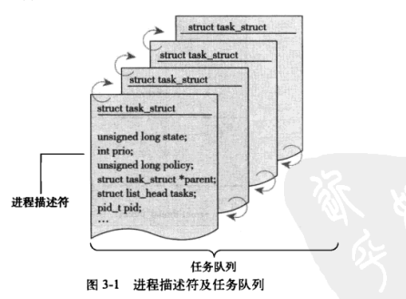
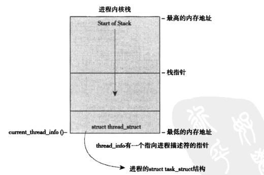
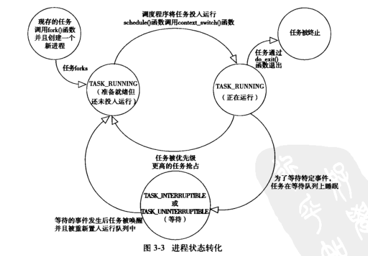
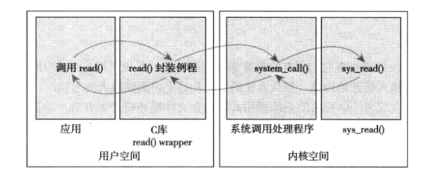
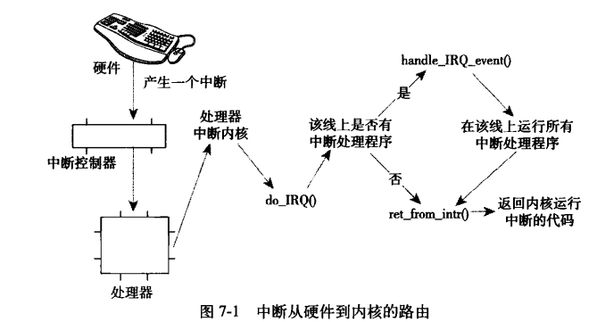
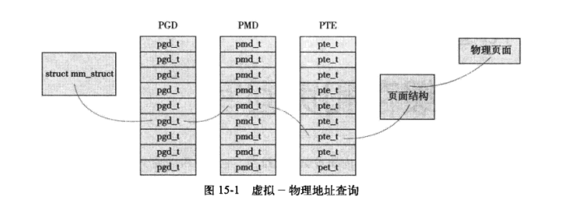

本博文从《linux内核设计与实现》第三版的笔记，主要是任务调度、终端、内存管理、虚拟文件系统等部分。作为导读来存在，为以后看源码做点准备。
内核开发的特点
内核编程既不能访问C库，也不能访问标准的C头文件
内核不能链接使用标准C函数库，因为C函数库依赖系统调用（操作系统），而且C库对于内核，太大太低效。但大部分常用的C库函数在内核中都已经得到实现。内核编程必须使用GNU C
内核并不完全符合ANSI C标准。它总是用到gcc提供的许多语言的扩展部分。内核编程时缺乏像用户空间那样的内存保护机制
用户进程访问非法内存时，内核就会发现错误，并发送SIGSEGV信号。但内核如果访问了非法内存，那就很难控制了。
内核中的内存不分页。也就是说，没掉一个字节，物理内存就减少一个字节。CPU通过寻址来访问内存。32位CPU的寻址宽度是4G，就是可支持的物理内存最大是4G，但如果物理内存小于4G，程序不得不降低内存占用。为解决此类问题，现在CPU引入MMU（内存管理单元），思想就是利用虚拟地址来替代物理地址，即CPU寻址时使用虚拟地址替代物理地址，即CPU寻址时，使用虚拟地址，由MMU负责将虚拟地址映射为物理地址。
内存分页（Paging）是在使用MMU的基础上，提出的内存管理机制。它将虚拟地址和物理地址按固定大小（4K）分割成页（page）和页帧（page frame），并保证页与页帧的大小相同。内核变成时难以执行浮点运算。
用户空间的进程进行浮点操作的时候，内核会完成从整数操作到浮点数操作的模式转换。而内核并不完美支持浮点操作，因为它本身不能陷入。在内核中使用浮点数时，除了人工保存和恢复浮点寄存器，还有一些琐碎的事情要做。内核给每个进程只有一个很小的定长堆栈
内核空间的栈比较小，一般就2页，即32位的内核是8KB，64位是16KB。由于内核支持异步中断、抢占和SMP
SMP：（Symmetric mutliprocessing）是一种多处理器的计算硬件构架，在对称多处理架构下，每个处理器的地位都是平等的，对资源的使用权相同。有两个或更多的相同的处理器共享同一主存，由一个操作系统控制。
SMP，里那个以上的cpu内核有可能访问共享的同一资源
中断是异步的，中断处理程序就可能访问同一资源
inux内核可以抢占，内核中一段正在执行的代码可能会被另一段代码抢占，从而还是访问相同的资源。
常用的解决办法是自旋锁和信号量。
进程管理
概念
虚拟机制
进程提供了2种虚拟机制：虚拟处理器和虚拟内存。虽然多个进程正在共享一个处理，但虚处理器给进程一种假象，让这些进程觉得自己在独享处理器。而虚拟内存让进程在分配和管理内存时觉得自己拥有整个系统的所有内存资源。进程描述符pid与任务结构task_struct
内核中通常把进程叫做任务（task）
任务结构task_struct

thread_info,指针指向task_struct，通过slab分配器分配task_struct，这样能达到对象复用和缓存的目的。放在内核站的尾端是为了通过栈指针就能找到它的位置。进程的状态
进程树
所有进城都是通过fork()来实现，所以就有了父子进程的关系，在task_struct中有父进程的指针，以及子进程的列表。进程创建
资源： 地址空间（VM）、文件系统资源(FS)、文件描述符(FILES)、信号处理程序(SIGHAND)
fork()： 大体是从父进程拷贝相同的task_struct，然后将描述符、资源从父进程分离。对于线程，就可以有些资源就不分离而已。进程终结
首先会回收task_struct中的资源，并给其子进程找到合适的父进程，然后返回到其父进程，然后删除进程描述符。
调度
背景
进程调度系统可以看作在运行态P35
抢占式与非抢占式的区别
进程调度历史
简单调动 =》 O（1）调度程序 =》 完全公平调度算法（CFS）
策略
调度程序角度对进程的划分：I/O消耗型与cpu消耗型
调度策略的平衡：进程响应迅速（响应时间短）和最大系统利用率（高吞吐量）
进程优先级，2套优先级范围：
nice值（人越nice越礼让，进程nice越大优先级越低），范围-20 到 +19
rtprio实时优先级，其值可配置，范围是0-99。越高优先级越高。任何实时进程的优先级都高于普通的进程，实时优先级与nice优先级处于互补相交的两个范畴。
时间片
调度策略必须规定一个默认的时间片，时间过长会导致系统对交互的响应欠佳（I/O消耗型），时间片太短会明显增大进程切换带来的cpu耗时。但linux的CFS调度器并没有直接分配时间片到进程，它是将处理器的使用比划分给了进程，这样进程所获得的时间片其实是个系统负载密切相关的。CFS调度器，其抢占时机决定于新的可运行程序消耗了多少处理器使用比，如果消耗的使用比比当前进程小，则新进程立即投入运行，抢占当前进程。
算法
假设有2个运行进程，在标准Unix调度模型中，我们先运行其中一个5ms，然后再运行另一个5ms。但它们任何一个运行时都将占有100%的处理器。而在理想情况下，完美的多任务处理器模型应该是：我们在10ms内同时运行两个进程，它们各自使用处理器一半的能力。
CFS的做法是允许每个进程运行一段时间、循环论转、选择运行最少的集成作为下一个运行进程，而不再采用分配给每个进程时间片的做饭，CFS在所有可运行进程总数基础上计算出一个进程应该运行多久，而不是依靠nice值来计算时间片。nice值在CFS中被作为进程获得的处理器运行比的权重。
实现
时间记账
多数Unix系统中，分配一个时间片给每一个进程，当系统时钟节拍发生时，时间片都会减少每一个节拍周期，当一个进程的时间片减少至0,它就会被另一进程抢占。CFS不再用时间片的概念，但它也必须维护每一个进程运行的时间到帐。vruntime变量存放进程的虚拟运行时间，该运行是经过所有可运行进程总数的标准化，跟定时器节拍不再相关。vruntime变量来记录一个程序到底运行了多长时间以及它还应该再运行多久。
update_curr()函数来实现记账功能，它是有系统定时器周期性调用，curr->vruntime每次都增加一个 delta_exec_weighted，而这个delta_exec_weighted是根据当前任务的本次间隔delta_exec来，以及所有其他进程的delta_exec来计算的。
应该这个权重是考虑了nice值的，但没有看到vruntime对任务调度的影响的部分代码，应该是在update_min_vruntime(cfs_rq)中产生了影响。
进程选择
当CFS需要选择下一个运行进程时，它会挑选一个具有最小vruntime的进程。CFS使用红黑树来组织可运行进程队列，红黑树是一个自平衡二叉搜索树小于节点在其左节点，大于在右节点，且是一种平衡的二茶树。调度器入口
入口为schedule()，在kernel/sched.c中，它会找到一个最高优先级的调度类，然后有最高优先级的调度类下一该运行的进程。
CFS是对普通进程的调度类，而系统运行的绝大多数进程都是普通进程。休眠
休眠的进程处于不可执行状态，需要从红黑树里移出，放入等待队列。待唤醒后，再从等待队列移出，放入红黑树。总结
CFS就是通过vruntime实现对所有进程运行时间归一化的处理，处理过程肯定有nice值、以及进程数的参与。然后每次选取最小vruntime的去调度。
抢占
上下文切换
抢占就需要进行上下文的切换，上下文切换主要负责：- 把虚拟内存从上一个进程切换到新进程中
- 调用switch_to()，从上一个进程的处理器状态切换到新进程的处理器状态。这包括保存、恢复栈信息和寄存器信息，还有其他任何与体系结构相关的状态信息。
用户抢占
内核将返回用户空间的时候，如果need_resched标志被设置，会导致schedule()被调用，此时就会发生用户抢占。用户抢占发生在：- 从系统调用返回用户空间时
- 从中断处理程序返回用户空间时
内核抢占
Linux完整支持内核抢占，不支持抢占的内核中，内核代码可以一直执行，到它去完成为止，调度程序没法在一个内核级任务正在执行的时候重新调度。Linux内核就可以在任何时间抢占正在执行的任务。内核抢占发生在：- 中断处理程序正在执行，且返回内核空间之前。
- 内核代码再一次具有可抢占性的时候
- 内核中的任务显式调用schedule()
- 内核中的任务阻塞
实时调度策略
linux提供了两种实时调度策略： SCHED_FIFO 和 SCHED_RR。
SCHED_FIFO实现了一种简单那的,先入先出的调度算法: 一旦一个SCHED_FIFO进程处于可执行状态,就会一直执行,知道它自己受阻或显式释放处理器,它不基于时间片,可以一直执行下去.只有更高优先级的SCHED_FIFO或者SCHED_RR任务才能抢占SCHED_FIFO人任务,且高优先级的SCHED_FIFO可以立即抢占低有线的.
SCHED_RR与SCHED_FIFO大体相同,只是SCHED_RR带有时间片.当时间片耗尽,它在统一优先级的其他实时进程被轮流调度,时间片之用来重新调度同一优先级的进程.即使时间片耗尽,低优先级的也不能抢占SCHED_RR高优先级的任务.
一点疑问: SCHED_FIFO是一种先入先出的队列,如果一个高优先级的紧挨在一个低优先级的后面,那会发生什么? 低优先级先运行,接着被高优先级的抢占,并将低优先级任务处于TASK_INTERRUPTABLE状态,并指导高优先级的运行完,再去运行低优先级的.
反过来,低优先级在一个高优先级的后边,会发生什么? 高优先级的先运行,低优先级的会继续在队列里,还是在其他的等待对立里?
优先级范围
实时优先级从0 到 MAX_RT_PRIO-1(99),SCHED_NORMAL级进程的nice值共享了这个取值空间,它的取值从MAX_RT_PRIO 到 (MAX_RT_PRIO + 40),也就是说 nice从-20到+19对应着 100到139的实时优先级范围.
问题
- 时间片理解
对传统unix的时间片还有有些疑问,首先时间片是按nice值来进行分配,当高优先级运行完再运行低优先级的,当都运行完呢? 应该由调度程序继续来划分时间片,再继续运行,那这样,高优先级的任务也会等较久的时间啦,如果有100个任务,轮过一遍还是挺费事的.
不对,传统unix的时间片是固定的,什么样的优先级对应的时间片是固定的,那就需要有一个队列,时间片运行完后,将任务放到队列的后面,继续运行.且队列不能按优先级排序,因为一排序,它就又到前面了.不排序就会造成低优先级的比高优先级的先运行的情况,又会造成问题.
系统调用
定义
在os中，内核提供了用户进程与内核进程进行交互的一组接口，这些接口让应用程序受限地访问硬件设备，提供了创建新进程并与已有进程进行通信的机制，也提供了申请操作系统其他资源的能力。
在linux中，系统调用是用户空间访问内核的唯一手段。
系统调用 与 应用程序接口（API）
大约关系是，内核提供系统调用接口，供用户空间的应用程序使用，但一般都会将系统调用进行进一步的封装变成应用程序编程接口API，这些接口中最流行的标准是POSIX，最后应用程序直接使用的是这些编程接口。以C库为中printf()调用为例：
C库提供了POSIX绝大部分API
系统调用
在Linux系统中，每个syscall被赋予一个系统调用号，通过这个独一无二的号就可以关联系统调用。当用户空间的进程执行一个系统调用的时候，这个系统调用号来指明到底是要执行哪个系统调用。如此可见，系统调用号是静态的，如果一个系统调用被删除，它占用的系统调用号不允许被回收。
如getpid()系统调用，它会返回当前进程的PID，内核中的实现：
1 | SYSCALL_DEFINE0(getpid) |
SYSCALL_DEFINE0是一个宏，它定义一个无参数的系统调用，展开后的代码：1
asmlinkage long sys_getpid(void)
asmlinkage限定词，是一个编译指令，通知编译器仅从栈中提取该函数的参数。
系统调用处理程序
用户空间的程序无法直接执行内核代码，也不能直接调用内核空间的函数，因为内核驻留在受保护的地址空间上。
应用程序应该以某种方式通知系统，告诉内核自己需要执行一个系统调用，系统系统切换到内核态，这样内核就可以代表应用程序在内核空间执行系统调用。
通知内核的机制是靠软中断（中断号128）实现的。通过引发一个异常，促使系统切换到内核态去执行异常处理程序，这个异常处理程序就是系统调用的处理程序。
仅陷入内核空间是不够的。必须将系统调用号、函数的参数一并传给内核。这些传递，是通过寄存器来完成的，分别放在eax,ebx,ecx,edx,esi,edi（前5个参数）中。

系统调用上下文
内核在执行系统调用的时候，处于进程上下文中。current指针指向当前任务，即引发系统调用的那个进程。
在进程上线文中，内核可以休眠，可以被抢占。
实现
参数验证
指针、权限等验证防止内核崩溃
内核提供了2个方法来完成内核空间与用户空间之间数据的来回拷贝。注意内核无论何时都不能轻率的接受来自用户空间的指针。（这就需要数据的拷贝了，但数据的拷贝本身就需要起止的指针）。copy_to_user（）与copy_from_user()例子
1
2
3
4
5
6
7
8
9
10
11
12SYSCALL_DEFINE3(silly_copy,
unsigned long * src,
unsigned long * dst,
unsigned long len)
{
unsigned long buf; // 书中例子，直接一个long的buf就能使用？
if(copy_from_user(&buf, src, len))
return -EFAULT;
if(copy_to_user(dst, &buf, len))
return -EFAULT;
return len;
}还有对权限的检验： capable(CAP_SYS_BOOT) 来进行用户权限的检验。
还需要将这个系统掉哟个你注册：
- 在系统调用表最后，增加新的一项，类似与枚举，用于获取新的系统调用号。
- 对于所有支持的体系结构，系统调用都必须定义于 <asm/unistd.h>中。
系统调用必须被编译进内核影像(不能被编译成模块)。这需要将实现放到kernel/下的一个相关文件中，比如sys.c（包含各种各样的系统调用）
这样虽然定义了系统调用，但在C库中肯定没有对它的支持，好在linux提供了一组宏，用户对系统掉哟个你进行直接访问
1
2
_syscall3(long, silly_copy, src, dst, len)
中断
简介
中断也是老朋友了，就是硬件中，使能了某个引脚的中断，然后编写这个中断的响应函数来处理。只不过在操作系统中会稍微麻烦了一点，它将终端分为2部分，其中上半部用来响应硬件、恢复中断，下半部用来处理硬件的数据。上、下半部的对比
中断处理程序是上半部，接收一个中断，它就立即开始执行，只做有限的工作，例如对接收的中断进行应答，或者复位硬件，这些工作都是在所有中断被禁止的情况下完成的。能够被允许稍后完成的工作会推迟到下半部去。注册中断处理程序
中断处理程序是驱动程序的组成部分，驱动程序通过request_irq()函数<linux/iterrupt.h>中注册一个中断处理程序，并激活给定的中断线，以处理中断。
主要参数是中断号与中断处理程序。中断上下文
当执行一个中断处理程序时，内核处于中断上下文中。回忆进程上下文，进程上下文是一种内核所处的操作模式，此时内核代表进程执行如系统调用，运行内核线程等任务，在进程上下文中，可以通过current宏关联当前进程，因为进程是以进程上下文的形式连接到内核中，因此，进程上下文可以睡眠，可以调用调度程序。
中断上下文则相反，它与进程无关，也就没有后备进程，所以不能睡眠，中断上下文具有严格的时间限制，因为它打断了其他代码。
/proc/interrupts中存放与系统中中断的相关信息。
下半部
下半部就主要有三种选择：软中断、tasklet和工作队列，其中tasklet基于软中断，工作队列依靠内核线程实现。
对于后半部，如果有休眠的需要，工作队列是唯一选择，否则就用tasklet。软中断一般不会用，因为它就32个，且被整个系统严格格共享且规范使用。
内存管理
页
内核以page(页)作为管理内存的基本单位，因为MMU(内存管理单元，把虚拟地址转换成物理地址的硬件)通常就是以页为单位进行处理。
32位体系结构支持4KB页，64位体系一般支持8KB页大小。
内核用struct page结构表示系统中的每个物理页，该结构位于<linux/mm_types.h中>
page结构与物理页相关，而并非虚拟页。保存着页是否脏页，引用计数，虚拟地址（高地址可能没有，null）。区
由于硬件限制，内核并不能对所有的页一视同仁，只有特定物理地址上的page才能用于也写特定的任务，所以内核就把页划分为不同的区。
linux主要用于4个区：- ZONE_DMA – 这个区包含的页用来执行DMA操作【好久不见DMA，印象中是内存不再cpu参与下，直接与I/O交互】
- ZONE_DMA32 – 只能被32位设备访问的DMA
- ZONE_NORMAL – 能正常映射的页
- ZONE_HIGHM – 所谓的高端内存，其中的页并不能永久的映射到内核地址空间。
这些区不不是都会有，如在64位体系中，所有内存都被映射，ZONE_HIGHMEM就为空
在x86-32上
| 区 | 物理内存 |
|---|---|
| ZONE_DMA | <16MB |
| ZONE_NORMAL | 16~896MB |
| ZONE_HIGHMEM | >896MB |
这些区域一般在<linux/mmzone.h>中的struct zone中定义
比较重要的有lock域，是一个自旋锁，它防止zone被并发访问，这个域只保护zone结构，而不是保护这个区中的所有页。watermark数组，持有该区的最小值、最低和最高水位值。内核使用水位为每个内存设置合适的内存消耗基准，该水位随空闲内存的多少而变化。
每个cpu的内存分配
一般来说，每个CPU的数据存放在一个数组中，数组中的每一项对应系统上一个存在的处理器。按当前处理器确定这个元素的当前元素。这些数据对当前处理器来说是唯一的，且除了当前处理器，没有其他处理器可接触到。1
2
3
4int cpu;
cpu = get_cpu(); // 获取当前处理器，并禁止内核抢占
...操作
put_cpu(); // 激活内核抢占2.6版本引入新接口，percup来创建和操作每个CPU的数据
编译时，定义每个CPU变量
DEFINE_PER_CPU(type, name) 它为系统中的每一个处理器都创建一个类型为type，名字为name的变量。
DECLARE_PER_CPU(type, name)这是声明一个变量
get_cpu_var(name) 和 put_cpu_var(name)返回当前处理器的中指定变量.这里有个问题,什么样的数据适合放在为每个cpu分配的内存上呢?
内存分配的选择
如果需要连续的物理页，可以使用某个低级页分配器或者kmalloc()。这是内核中内存分配的常用方式，也就是大多数应该使用的内存分配方式。传递给这些函数通常的标志是GFP_ATOMIC和GFP_KERNEL。GFP_ATOMIC表示进行不睡眠的高优先级分配，这是终端处理程序和其他不能睡眠的代码段的需要。GFP_KERNEL表示可以睡眠的代码，比如进程上下文中。如果想从高端内存进行分配，就是用alloc_pages()。alloc_pages()函数返回一个指向struct page结构体的指针，而不是指向某个逻辑地址的指针。因为高端内存很可能没有被映射，因此访问它的唯一方式就是通过相应的struct page结构。有时为了获得真正的指针，应该调用kmap()，把高端内存映射到内存的逻辑地址空间，kmap在高端内存用会永久映射高端内存，而在低端用就是获取内存地址。
如果不需要物理上连续的页，而仅仅需要虚拟地址上连续的页，那么就使用vmalloc()。vmallog()函数分配的内存虚地址是连续的，但它本身不保证物理上的连续。
如果要创建和撤销很大的内存结构，那么应该考虑slab高速缓存。slab层会给每个处理器维持一个对象高速缓存（空闲链表）。这种高速缓存会极大提高对象分配和回收的性能【就是提前new出好多空间，使用时直接使用，无需新建跟销毁】
虚拟文件系统
unix文件系统：文件、目录项、索引节点和安装点
从本质上讲文件系统是特殊的数据分层存储系统，它包含文件、目录和相关的控制信息。文件系统的通用操作包括创建、删除和安装。
文件可以做一个有序字符串，字符串的第一个字节是文件的头，最后一个字节是文件的尾。每一个文件为了便于系统和用户识别，都被分配了一个便于理解的名字。典型的文件系统有读、写、创建和删除。
在Unix中，目录属于普通文件，它列出包含在其中的所有文件，由于VFS把目录当作文件对待，所以可以对目录执行和文件相同的操作。
Unix系统将文件本身 和 文件的控制信息2个概念区分，例如访问控制权限、大小、拥有者、创建时间等信息。文件信息被存储在一个单独的数据结构中，该结构被称为索引节点（inode）。文件控制信息被存储磁盘的超级块中。vfs对象及其数据结构
vfs采用面向对象的设计思路。VFS中四个主要的对象类型，它们分别是：
（super）超级块对象，它代表一个具体的已安装文件系统
（inode）索引节点对象，它代表一个具体文件
（dentry）目录项对象，它代表一个目录项，是路径的一个组成部分
（file）文件对象，它代表有进行打开的文件。
unix是用C实现了，也就不会有class等关键字，那如何来实现面向对象呢，4个主要的对象类型都是结构体，而对他们的操作都封装在一个操作对象里作为类型对象的属性，操作对象中包含指向操作其父对象的函数指针;这就是之前听说过的，用C来实现面向对象的技术。超级块对象
super_block结构体，定义在<linux/fs.h>中，用于存储特定文件系统的信息
超级块对象的操作位于fs.super.c中，超级块对象通过alloc_super()函数创建并初始化。在文件系统安装时，文件系统会调用该函数从磁盘读取文件系统超级块，并且将其信息填充到内存中的超级块对象中。- 超级块操作
超级块对象中最重要的一个属性s_op，它指向超级块的操作函数表。该函数表由super_operations结构体表示，定义在linux/fs.h中。
所有的操作都在进程上下文中调用。除了dirty_inode()，其他函数都可以阻塞。
- 超级块操作
索引节点对象
一个索引节点代表文件系统的一个文件，它也可以是设备或管道这样的特殊文件。索引节点对象必须在内存中创建，以便于文件系统使用。
索引节点对象包含了对象操作文件或目录时需要的全部信息。对于Unix风格的文件系统，这些信息可以从磁盘索引节点直接读入，但有些文件系统需要特殊的转换，不管哪种情况，索引节点对象必须在内存中创建，以便VFS使用。
inode 结构体在 <linux/fs.h>中目录项对象
目录项对象是为了简化索引对象对目录的操作而来的，在磁盘上并没有一个目录项的文件与之对应，是在访问的过程中，在内存中创建的对象。
路径中的每一项都属于目录项对象：/mnt/cdrom/foo中，/、mnt、cdrom和foo都属于目录项对象。VFS在执行目录操作时，会现场创建目录项对象
dentry 结构体在<linux/dcache.h>中目录项状态： 被使用、未被使用、负状态; 被使用与未被使用的状态都对应一个有效的索引节点，而负状态则没有对应的有效节点。
如果VFS层便利路径中所有的元所将他们逐个解析成目录项对象，还要到达最深层的目录，将是一个非常费力的工作，会浪费大量的时间。所以内核将目录项对象缓存在目录项缓存中。使用时，先在目录项缓存中去查找，如果知道则直接使用，反之就按路径逐层解析、搜索，找到后，将目录项加入dcache中。
文件对象
文件对象表示进程已打开的文件在内存中的表示。该对象由相应的open()系统调用创建，而由close()调用撤销。所有这些文件相关的调用实际上都是文件操作表中定义的方法。
多个进程可以同时打开和操作一个文件，所以同一个文件可能存在多个文件对象。
文件系统仅仅在进程观点上代表已打开文件，它反过来指向目录项对象，又指向索引节点。
file结构体在 <linux/fs.h>中常见的ioctl()、read（）、write()等都是在文件操作对象中定义的
其他
vfsmount 当文件系统被安装时，将有一个vfsmount结构体在安装时被创建，用来代表文件系统的实例–也就是代表一个安装点
进程相关的数据结构
file_struct:进程与文件对象的关联，像是中间表那样
fs_struct：进程当前的工作目录(pwd)和根目录
namespace: 它使得没一个进程在系统中都看到唯一的安装文件系统（不仅是唯一的根目录，而且是唯一的文件系统层次结构）。
进程地址空间
linux采用虚拟内存技术，系统中的所有进程以虚拟方式共享内存。对于一个进程而言，它好像可以访问整个系统的所有物理内存。更重要的是，即使单独一个进程，它拥有的地址空间也可以远远大于系统物理内存。
地址空间
每个进程都有一个32或者64位独立、连续的平台地址空间。尽管一个进程可以寻址4GB虚拟内存（32位），但并不代表它就有权访问所有的虚拟地址，进程只能访问有效内存区域内的内存地址。如果进程访问了无效的内存区域，内核会终止进程，并返回段错误。可被访问的有效地址被称为内存区域(memory areas)内存区域包含各种内存对象：
– 可执行文件代码的内存映射：代码段
– 可执行文件已初始化全局变量的内存映射：数据段
– 包含未初始化全局变量的内存映射：bss
– 用于进程用户空间栈的内存映射：栈，局部变量
– 匿名的内存映射，malloc()分配的内存： 堆，
– 任何共享内存段
– 任何内存映射文件
– 动态链接程序等共享库的代码段、数据段、bss内存描述符mm_struct
mm_struct结构体，定义在<linux/sched.h>中，内核使用mm_struct表示进程的地址空间，该结构包含了和进程地址空间有关的全部信息。
内存描述符mm_struct与进程一一对应，描述的是进程各段使用的地址，而各段使用的地址用vm_area_struct结构体来表示，各段的起止地址在mm_struct中都有属性来记录，还保存虚拟页到实际物理地址的映射：pgd_tfork() => copy_mm()函数来完成创建mm_struct
内核线程的使用不一样，因为内核线程没有进程地址空间，也就没有内存描述符，所以在进程描述符中，mm域为空。
当一个进程被调度时，该进程的mm域指向的地址空间被装载到内存，进程描述符中的active_mm域会被更新，指向新的地址空间。内核县城没有地址空间，mm域为NULL，当一个内核线程被调度的时候，内核发现mm域为NULL，会保留前一个进程的地址空间，随后内核更新内核县城对应的进程描述符中的active_mm域，使其只想前一进程的内存描述符。
内核线程如此使用，是因为内核线程是需要使用页表的（虚拟内存到物理内存的映射）。虚拟内存区域vm_area_struct(VMA)
vm_area_struct结构体描述了制定地址空间内连续区间上的一个独立内存范围。内核将每个内存区域作为一个单独的内存对象管理，每个内存区域都拥有一致的属性，如访问权限等。
vm_area_struct在<linux/mm_types.h>中。
主要就是区间的首尾地址，VMA形成的链表，访问权限，mm_struct指针
使用中可以使用pmap打印出进程的各个VMA。
比如C库中的物理内存1212KB空间，内存中只映射一份，将这些地址空间以只读的方式映射进每个引用的进程中即可.某个vm_area_struct就可以映射一份即可。mmap() 和 do_mmap（）创建地址空间。其实如果是地址空间跟一个已经存在的地址空间相邻，并且访问权限相同，两个空间就合并（类似与扩展）。反之就创建一新的VMA，并把地址加到进程的地址空间中。
页表
应用程序操作的是虚拟内存，但CPU直接操作确是物理内存，所以当程序访问虚拟内存时，必须将虚拟内存转换成物理内存，CPU才能解析地址访问请求。地址转换工作通过查询页表完成。
linux中使用三级页表完成地址转换：
顶层页表PGD（页全局目录），它包含了一个pgd_t类型数组
二级页表PMD(页中间目录)，是一个pmd_t类型数组
底层页表PTE，包含了pte_t类型的页表，指向物理页面
搜索页面的工作一部分是由硬件完成的，对应的结构提依赖具体的体系结构，定义在<asm/page.h>中
